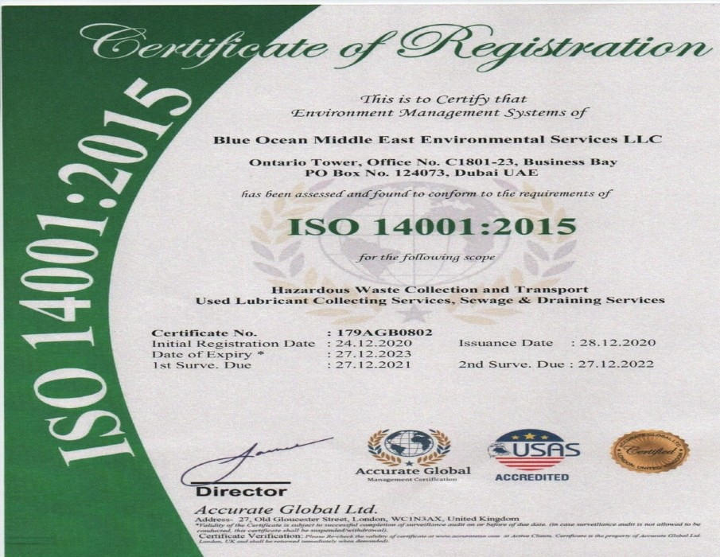

Environment protection and waste management company
Blue Ocean Middle East Environmental Services LLC is one of the Waste Management Companies, which is doing the collection of used oil and transport from any emirates to other destinations. We are approved by the Environmental Protection Departments in Dubai. We have the permits as necessary for the oil transportation, storage, and trading of used oil from Dubai Municipality and also for the Collection and Transportation of Waste Oil/Slop/Sludge Oil / oily water from organizations located in any part of the United Arab Emirates.
Blue Ocean Middle East Environmental Services is an environment protection and waste management company who are specialized in removing and recycling of used oil waste from tankers to normal garages with all the necessary permits from the Dubai Government and Environment Departments of Dubai and Imdaad for the Collection and transportation and safe disposal of used oily wastes. Our transportation services for the disposal of used oil offers a safe and economical transportation solution throughout UAE. We have the specialized waste disposal types transported by trucks, tankers, barges and other vehicles. read more
Blue Ocean Middle East Environmental Services is an environment protection company who are specialized in removing/recycling oily waste from supertankers to normal garages with all the necessary permits from the Dubai and Environment Departments -Dubai & Sharjah and Imdaad for Collection and safe disposal of used oily wastes.
We provide quality services in waste collection, transfer station management, recycling collection, waste processing and transport Waste oils, oily water, oil sludge from lagoons etc. which possess disposal problems for the industry. read more
We provide storage facility services of waste oil, oily residues/bilges, etc. to the vessels at all major Ports of UAE & Anchorage. We are economical and prompt at the needs of our customers. Our Commitment towards our customers makes them happy with our services. read more
We do buy and sale all kind of used engine oil, used motor oil originating from cars, trucks, Buses, most automobiles, boats, ships, heavy vehicles, cranes and hydraulic machineries. We also have the bulk purchase orders for most types of pre-tested waste engine oil and hydraulic oil suitable for recycling. read more
As the leader among liquid waste disposal companies, Blueoceans can get your wastewater needs under control with a wide range of treatment technologies for liquid and semi-liquid hazardous and non-hazardous wastewater.
Through our network of facilities located across dubai & sharjah, we can accept industrial wastewater and liquid hazardous waste for treatment and disposal in bulk and drum and via rail. For materials that cannot be treated, we also provide wastewater incineration. read more
Blue Ocean Middle East Environmental Services LLC offers our customers high quality services in the Waste management sector as per U.A.E. Environmental and Safety Rules. We provide complete waste management and disposal of used oil and transport and trade to other parts of the UAE as per the demand and need of our customers.
Prompt and Quick responsive professional services.
Providing cost-effective solutions tailored to your needs.
Round-the-clock customer support for your convenience.
Specialized in waste management and disposal services.